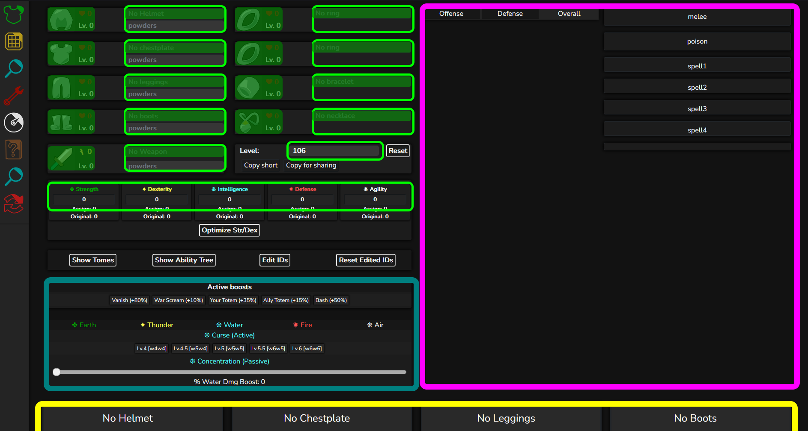

This section is about the encoding schemes Wynnbuilder uses for its various saveable items (builds, crafted items, and custom items).
We use a Base 64 (B64) encode/decode system in most shareable links. It would be quite clunky to put a bunch of numbers (the data we save and read) into one link. To save some space, we compress the base 10 numerical alphabet into a custom B64 alphabet.
The Wynnbuilder B64 character table:
0123456789ABCDEFGHIJKLMNOPQRSTUVWXYZabcdefghijklmnopqrstuvwxyz+- ^ ^ ^ ^ ^ ^ ^ ^ ^ ^ ^ ^ ^ | | | | | | | | | | | | | 0 5 10 15 20 25 30 35 40 45 50 55 60
The B64 encoding of a number (in the 0 to 63 range) is equal to the character at the index within the above string.
For example, if we have a set of items with id numbers in the range [0Kv:
, 0,
K, and v.
Decoding is a little different. We can either interpret the B64 string as a signed or unsigned number (signed: using 2s complement binary).
Things that should be interpreted as signed are:
Things that should be interpreted as unsigned are:
Now that we understand the B64 system, we can move on to the way builds, crafted items, and custom items are stored in links.
First, what do we need in order to encode an entire build?
Wynnbuilder mainly runs calculations for damages and defense. Therefore, we need:
Wynnbuilder assigns each item in the Wynncraft item pool to a unique ID number.
For items, you can download the item DB here: clean.json. Each item has an id value that can be put in a map. The NoneItem ID numbers start at 10000 in the canonical order: [helmet, chestplate, leggings, boots, ring 1, ring 2, bracelet, necklace, weapon] (No Weapon has an id of 10008).
For tomes, you can download the tome DB here: tome_map.json. The NoneTome ID numbers start at 61 in the order [no weapon tome, no armor tome, no guild tome] so that we can store tome IDs in 1 B64 character.
For powders: id numbers
All build links starting from Version 8 may look like "?v=[wynn version number]#[version number]_[build hash]". The query section is optional.
All build links older than Version 8 look like "#[version number]_[build hash]".
Version 8 was made to account for an oversight made when designing the tome encoding, and to signal the beginning of versions that support wynn version history. Version 8 and higher links may start with a query indicating the wynn version to use.
Additionally, Version 8 uses 2 characters instead of 1 character to encode the ID of each tome. (The IDs representing NONE tomes does not change.)
Version 7 was made to account for ability trees in wynncraft 2.0. Version 7 introduces a new field at the end of the build hash, for ability tree data. Atree data is compressed using a depth first search algorithm into a binary blob, which is then base-64 encoded and appended to the V6 hash. The binry blob is decompressed by using the corresponding traversal.
The tree structure defining the ability tree can be found in a json file (by default, js/builder/atree_constants_min.json). The file defines connections between the ability tree nodes: Each node has an unordered list of parent nodes, and an ordered list of child nodes.
A reference implementation of the encoding/decoding algorithms can be found in js/builder/build_encode_decode.js. A pseudocode description of the algorithms is given here:
// Encode an ability tree configuration into a binary blob.
// NOTE: this algorithm only works for "connected" (valid) ability trees.
// Its behavior is not well defined otherwise.
//
// Parameters:
// tree_data: Object containing ability tree structure.
// tree_state: Object containing info about which abilities are selected.
function encode(tree_data, tree_state):
return_vector = BitVector()
visited = Set()
function recursive_traverse(head_node):
for each child of head_node, in order:
if child is not in visited:
add child to visited set
if tree_state.is_active(child):
append bit 1 to return_vector
recursive_traverse(child)
else:
append bit 0 to return_vector
recursive_traverse(tree_data.root)
return return_vector
// Decode a binary blob into an ability tree configuration
//
// Parameters:
// tree_data: Object containing ability tree structure.
// tree_state: Object containing info about which abilities are selected.
// tree_bitvector: raw binary data, accessed one bit at a time
function decode(tree_data, tree_state, tree_bitvector):
i = 0
visited = Set()
function recursive_traverse(head_node):
for each child of head_node, in order:
if child is not in visited:
add child to visited set
if tree_bitvector[i]:
child.active = True
recursive_traverse(child)
else:
child.active = False
i = i + 1
Version 6 was made to account for the desire to save tomes in a build.
https://hppeng-wynn.github.io/builder/#6_06W2SH0D40Qq2SK2SL02d0og0Qi191V-E0i2C1g0000100nZ6ZU6FCDo
Build hash format:
idMap (06W,
2SH,
0D4,
0Qq,
2SK,
2SL,
02d,
0og,
0Qi
19,
1V,
-E,
0i,
2C
1g
0s (B64 0 = 0 unsigned) in this example, we have no powders on any of the armor piece (no blocks).
1 (B64 1 = 1 unsigned). There is 1 block of powders to decode for the weapon item. That is 00nZ6.
00nZ6 in binary is 30 binary bits long (omitted). Each section of 5 bits directly corresponds to an powder ID.ZU6FCDo
Version 5 was made to allow for the ability to save custom items. To learn the specifics about custom item encoding, refer to the Custom Items section.
As of the last version of this documentation, version 5 is only used for encoding when there are custom items (and no tomes) in the build.
https://hppeng-wynn.github.io/builder/#5_06W00mCI-10000JCustom%20Chestplate0220510G020Fe0M0201a0D40Qq2SK2SL02d0og0Qi191V-E0i2C1g0000100nZ6zz++++-
Build Hash format:
idMap (06W,
00m (with the custom item CI-10000JCustom%20Chestplate0220510G020Fe0M0201a),
0D4,
0Qq,
2SK,
2SL,
02d,
0og,
0Qi
19,
1V,
-E,
0i,
2C
1g
0s (B64 0 = 0 unsigned) in this example, we have no powders on any of the armor piece (no blocks).
1 (B64 1 = 1 unsigned). There is 1 block of powders to decode for the weapon item. That is 00nZ6.
00nZ6 in binary is 30 binary bits long (omitted). Each section of 5 bits directly corresponds to an powder ID.It is possible that version 5 links will have an extra tome section at the end like above (see: Version 6 section). We ignore this in decoding.
Version 4 was made to allow for the ability to save crafted items. To learn the specifics about crafted item encoding, refer to the Crafted Items section.
As of the last version of this documentation, version 4 is the default version and is used when there are no custom items or tomes in the build.
https://hppeng-wynn.github.io/builder/#4_06W2SH0D40Qq2SK2SL02d0og0Qi191V-E0i2C1g0000100nZ6zz++++-
Build Hash format:
idMap (06W,
2SH,
0D4,
0Qq,
2SK,
2SL,
02d,
0og,
0Qi
19,
1V,
-E,
0i,
2C
1g
0s (B64 0 = 0 unsigned) in this example, we have no powders on any of the armor piece (no blocks).
1 (B64 1 = 1 unsigned). There is 1 block of powders to decode for the weapon item. That is 00nZ6.
00nZ6 in binary is 30 binary bits long (omitted). Each section of 5 bits directly corresponds to an powder ID.
https://hppeng-wynn.github.io/builder/#4_06WCR-1628i8v8v94948f210D40Qq2SK2SL02d0og0Qi1Q1V-E0l2C1g0000100nZ6zz++++-
Build Hash format:
idMap (06W,
CR-1628i8v8v94948f21,
0D4,
0Qq,
2SK,
2SL,
02d,
0og,
0Qi
19,
1V,
-E,
0i,
2C
1g
0s (B64 0 = 0 unsigned) in this example, we have no powders on any of the armor piece (no blocks).
1 (B64 1 = 1 unsigned). There is 1 block of powders to decode for the weapon item. That is 00nZ6.
00nZ6 in binary is 30 binary bits long (omitted). Each section of 5 bits directly corresponds to an powder ID.It is possible that version 4 links will have an extra tome string like above (see: Version 6 section) after the powders. You can ignore this in decoding.
Version 3 encoding added the ability to save build level.
https://hppeng-wynn.github.io/builder/#3_06W2SH0D40Qq2SK2SL02d0og0Qi191V-E0i2C1g0000100nZ6
Build hash format:
idMap (06W,
2SH,
0D4,
0Qq,
2SK,
2SL,
02d,
0og,
0Qi
19,
1V,
-E,
0i,
2C
1g
0s (B64 0 = 0 unsigned) in this example, we have no powders on any of the armor piece (no blocks).
1 (B64 1 = 1 unsigned). There is 1 block of powders to decode for the weapon item. That is 00nZ6.
00nZ6 in binary is 30 binary bits long (omitted). Each section of 5 bits directly corresponds to an powder ID.Version 2 encoding added the ability to save skill point info.
https://hppeng-wynn.github.io/builder/#2_06W2SH0D40Qq2SK2SL02d0og0Qi191V-E0i2C0000100nZ6
Build hash format:
idMap (06W,
2SH,
0D4,
0Qq,
2SK,
2SL,
02d,
0og,
0Qi
19,
1V,
-E,
0i,
2C
0s (B64 0 = 0 unsigned) in this example, we have no powders on any of the armor piece (no blocks).
1 (B64 1 = 1 unsigned). There is 1 block of powders to decode for the weapon item. That is 00nZ6.
00nZ6 in binary is 30 binary bits long (omitted). Each section of 5 bits directly corresponds to an powder ID.Version 1 is the very first encoding version by Wynnbuilder. It allows for saving all equipment (armors, accessories, weapon) and powders put on that equipment.
https://hppeng-wynn.github.io/builder/#1_06W2SH0D40Qq2SK2SL02d0og0Qi0000100nZ6
Build hash format:
idMap (06W,
2SH,
0D4,
0Qq,
2SK,
2SL,
02d,
0og,
0Qi
0s (B64 0 = 0 unsigned) in this example, we have no powders on any of the armor piece (no blocks).
1 (B64 1 = 1 unsigned). There is 1 block of powders to decode for the weapon item. That is 00nZ6.
00nZ6 in binary is 30 binary bits long (omitted). Each section of 5 bits directly corresponds to an powder ID.This section is about how to decode crafted items. To view an example of a crafted item in a build, check out Builds > Version 4.
Crafted items always start with "CR-" so that they are, as an entire category, distinguishable from item pool items. The ingredients and materials that make up the crafted item are stored in the rest of the "hash".
To encode all the info about a crafted item, we need:
Wynnbuilder assigns each ingredient and recipe to a unique ID number.
For ingredients, you can download the ingredient id map here: ing_map.json. The ID number for No Ingredient is 4000.
For recipes, you can download the recipe id map here: recipe_map.json or the recipe DB here: recipes_clean.json.
This is the first version of crafted item encoding. Crafted Items are always stored in a constant number of B64 characters.
This example shows how to parse a crafted item hash.
CR-1628i8v8v94948f21
Crafted item hash format:
CR- (always)1 62,
8i,
8v,
8v,
94,
94
8f2
1
1 maps to the unsigned integer You may need to parse a crafted item from a wynnbuilder crafter link.
https://hppeng-wynn.github.io/crafter/#1628i8v8v94948f21
We can simply take the string after the octothorpe/hash tag (#), tack on "CR-" in front of this string, and arrive at the full hash for the crafted item in question. Decode using the same logic as the previous example.
This section is about how to decode custom items. To view an example of a custom item in a build, check out Builds > Version 5.
Custom items always start with "CI-" so that they are, as an entire category, distinguishable from item pool items. The stats and values that make up the custom item are stored in the rest of the "hash".
This is the first version of custom item encoding and decoding.
You will need the full array of item identification saving order and all non-rolled identifications (ex: name). View them below.
ID saving order: ci_save_order = ["name", "lore", "tier", "set", "slots", "type", "material", "drop", "quest", "nDam", "fDam", "wDam", "aDam", "tDam", "eDam", "atkSpd", "hp", "fDef", "wDef", "aDef", "tDef", "eDef", "lvl", "classReq", "strReq", "dexReq", "intReq", "defReq", "agiReq","str", "dex", "int", "agi", "def", "id", "skillpoints", "reqs", "nDam_", "fDam_", "wDam_", "aDam_", "tDam_", "eDam_", "majorIds", "hprPct", "mr", "sdPct", "mdPct", "ls", "ms", "xpb", "lb", "ref", "thorns", "expd", "spd", "atkTier", "poison", "hpBonus", "spRegen", "eSteal", "hprRaw", "sdRaw", "mdRaw", "fDamPct", "wDamPct", "aDamPct", "tDamPct", "eDamPct", "fDefPct", "wDefPct", "aDefPct", "tDefPct", "eDefPct", "spPct1", "spRaw1", "spPct2", "spRaw2", "spPct3", "spRaw3", "spPct4", "spRaw4", "rainbowRaw", "sprint", "sprintReg", "jh", "lq", "gXp", "gSpd","durability","duration","charges"];
Non-rolled string IDs: nonRolled_strings = ["name", "lore", "tier", "set", "type", "material", "drop", "quest", "majorIds", "classReq", "atkSpd", "displayName", "nDam", "fDam", "wDam", "aDam", "tDam", "eDam", "nDam_", "fDam_", "wDam_", "aDam_", "tDam_", "eDam_", "durability", "duration"];
Rolled IDs: rolledIDs = ["hprPct", "mr", "sdPct", "mdPct", "ls", "ms", "xpb", "lb", "ref", "thorns", "expd", "spd", "atkTier", "poison", "hpBonus", "spRegen", "eSteal", "hprRaw", "sdRaw", "mdRaw", "fDamPct", "wDamPct", "aDamPct", "tDamPct", "eDamPct", "fDefPct", "wDefPct", "aDefPct", "tDefPct", "eDefPct", "spPct1", "spRaw1", "spPct2", "spRaw2", "spPct3", "spRaw3", "spPct4", "spRaw4", "rainbowRaw", "sprint", "sprintReg", "jh", "lq", "gXp", "gSpd"];
Non-rolled IDs: nonRolledIDs = ["name", "lore", "displayName", "tier", "set", "slots", "type", "material", "drop", "quest", "restrict", "nDam", "fDam", "wDam", "aDam", "tDam", "eDam", "atkSpd", "hp", "fDef", "wDef", "aDef", "tDef", "eDef", "lvl", "classReq", "strReq", "dexReq", "intReq", "defReq", "agiReq", "str", "dex", "int", "agi", "def", "fixID", "category", "id", "skillpoints", "reqs", "nDam_", "fDam_", "wDam_", "aDam_", "tDam_", "eDam_", "majorIds"];
Tiers: tiers = ["Normal", "Unique", "Rare", "Legendary", "Fabled", "Mythic", "Set", "Crafted"]
Types: types = [ "helmet", "chestplate", "leggings", "boots", "ring", "bracelet", "necklace", "wand", "spear", "bow", "dagger", "relik", "potion", "scroll", "food"];
Attack Speeds: attackSpeeds = ["SUPER_SLOW", "VERY_SLOW", "SLOW", "NORMAL", "FAST", "VERY_FAST", "SUPER_FAST"];
Class Requirements: classes = ["Warrior", "Assassin", "Mage", "Archer", "Shaman"]
Here's an example of a custom item hash.
CI-10000HMeta%20Chestplate010Gbest%20in%20slot0240401030510G0302SG0H020Fe0I020Fe0J020Fe0K020Fe0L020Fe0M0201Y0i0200U220z0204iKK150200U22160200U22170200U22180200U22190200U22
Given a custom item hash, we will in general continue to parse through many identifications and their values until we reach the end of the custom item hash.
Custom item hash format:
10. (0 for no fixed IDs, 1 for fixed IDs)tier, type, atkSpd, and classReq, there is no string used. They are encoded as a numerical value representing an index in a pre-defined array (check the Important Arrays section above). They also do not use the earlier-specified 2 characters to store length; instead, they each use only 1 B64 character to store their index in their corresponding arrays.10 (non-fixed IDs)000HMeta%20Chestplate
00 ("name")0H (Meta%20Chestplate ("Meta Chestplate")010Gbest%20in%20slot
01 ("lore")0G (best%20in%20slot ("best in slot")024
02 ("tier")4 (tiers[4] = "Fabled")040103
04 ("slots")01 (0 (positive)3 (051
05 ("type")1 (types[1] = "chestplate")0G0302SG
0G ("hp")03 (0 (positive)2SG (0H020Fe
0H ("fDef")02 (0 (positive)Fe (0I020Fe
0I ("wDef")02 (0 (positive)Fe (0J020Fe
0J ("aDef")02 (0 (positive)Fe (0K020Fe
0K ("tDef")02 (0 (positive)Fe (0L020Fe
0L ("eDef")02 (0 (positive)Fe (0M0201Y
0M ("lvl")02 (0 (positive)1Y (0i0200U22
0i ("hprPct")02 (0 (both positive)0U (22 (0z0204iKK
0z ("hprRaw")02 (0 (both positive)4i (KK (0z0204iKK
0z ("hprRaw")02 (0 (both positive)4i (KK (150200U22
15 ("fDefPct")02 (0 (both positive)0U (22 (160200U22
16 ("wDefPct")02 (0 (both positive)0U (22 (170200U22
17 ("aDefPct")02 (0 (both positive)0U (22 (180200U22
18 ("tDefPct")02 (0 (both positive)0U (22 (190200U22
19 ("eDefPct")02 (0 (both positive)0U (22 (You may need to parse a custom item from a Wynnbuilder customizer link.
hppeng-wynn.github.io/custom/#10000HMeta%20Chestplate010Gbest%20in%20slot0240401030510G0302SG0H020Fe0I020Fe0J020Fe0K020Fe0L020Fe0M0201Y0i0200U220z0204iKK150200U22160200U22170200U22180200U22190200U22
Similar to crafted items, the part of the link after the "#" is the rest of the custom item after the "CI-" constant portion. You may need to convert all "%20" to spaces manually.
Details on reading custom items in build links are provided in the Decoding WB links > Builds section.
Last updated: 30 May 2022
This section is about how Wynnbuilder's main builder page processes user input and calculates results. Might be useful if you want to script wynnbuilder or extend it! Or for wynnbuilder developers (internal docs).
Modeling wynnbuilder's internal computations as a directed graph has a few advantages:
An overview of wynnbuilder's internal structure can be seen here. Arrows indicate flow of information. Colors correspond roughly as follows:
The overall logic flow is as follows:
Outputs are computed as follows:
The build sets default skillpoints and edited IDs automatically, whenever a build item/level is updated. This is done using "soft links" by two nodes shown in red (builder-skillpoint-setter and builder-id-setter).
A soft link is where something goes and manually marks nodes dirty and calls their update methods. This is useful for these cases because the skillpoints and editable ID fields usually take their value from user input, but in some cases we want to programatically set them.
For example another soft link (not shown) is used to implement the reset button.